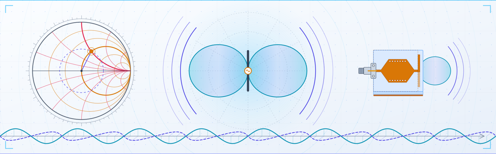

JRF Oppurtunity
Applications are invited for one JRF position in an ANRF-funded project under the PM Early Career Research Grant in our Lab.
Read more ↗
I am an Assistant Professor in the Department of Electronics & Instrumentation Technology at the University of Kashmir. I design antennas and engineer electromagnetic materials, with a focus on shaping radio waves for wireless communication, sensing, and imaging.
My research is at the intersection of RF/microwave engineering, electromagnetics, antenna systems, and engineered electromagnetic materials. My research focuses on the development of advanced high-frequency technologies for next-generation wireless communication, sensing, and imaging systems. I received my Ph.D. from IIT Delhi and my M.Tech. from IIITDM Jabalpur.
Applications are invited for one JRF position in an ANRF-funded project under the PM Early Career Research Grant in our Lab.
Read more ↗An M.Tech student's research has been accepted for presentation at the IEEE MAPCON 2026.